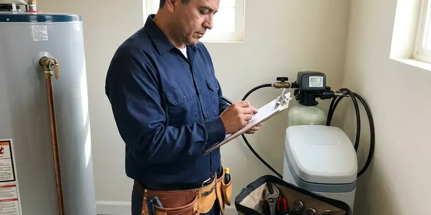

Water Leak Detection in Owasso, OK
For accurate water leak detection in Owasso, OK, trust the experienced team at JBK Plumbing. We quickly locate leaks to prevent costly repairs and water waste.
- Same-Day Water Leak Testing
- Smart Leak Sensor Installation
- Irrigation and Pool Checks
- Minimize Property Damage

Stop Wasting Water and Money on a Hidden Leak in Owasso, OK.
Act quickly to prevent major water damage. Our skilled technicians are ready to assist you with any leak detection needs.
Your Trusted Source for Water Leak Detection in Owasso, OK
JBK Plumbing understands the urgency of water leaks in Owasso, OK homes. We use sophisticated diagnostic tools to locate leaks quickly, allowing a precise and efficient repair, whether it's a pinhole leak or a larger pipe issue.
Our expertise includes:
- Yard and outdoor pipe leak detection.
- Smart shutoff valves and leak sensors from Moen Flo and Phyn
- Slab leak detection and repair.

Additional Plumbing Maintenance Services in Owasso, OK
Our maintenance and specialty plumbing services in Owasso, OK protect your home year-round and extend the life of every system.




Owasso residential plumbing service specialists


Customers
Why Choose JBK Plumbing for Water Leak Detection in Owasso, OK?
Ignoring a water leak, even a small one, can lead to significant structural damage and mold growth over time. Our prompt detection services save you from larger, more expensive repairs down the road.
- Property Value, Addressing leaks promptly protects your property's long-term integrity and market value.
- Foundation Protection, Water leaks can erode soil around foundations, leading to costly structural damage.
- Transparent Pricing, You'll receive a written, upfront estimate before any work begins, with no hidden fees for our detection services.
Citywide Coverage
JBK Plumbing proudly serves every neighborhood in and around Owasso with top-tier water leak detection services. We're committed to reaching you promptly, no matter where your home is located in the greater Owasso area.
Experienced Team
Our team understands how local homes use water, including summer irrigation and pool top-offs. That context helps them separate normal use from a true leak.
Safety-First Approach
We call 811 before digging on outdoor leaks and use proper backflow protection when working on irrigation systems. Smart valves are installed to manufacturer and code requirements.
Trusted Certified Owasso Plumbing Services Professionals
At JBK Plumbing, we take pride in providing certified plumbing services throughout Owasso, OK. Backed by leading industry credentials, our experienced plumbers combine technical skill with genuine customer care. Whether it is repair, installation, or maintenance, we follow strict safety and quality standards to deliver long-lasting results you can trust.
Call Us Now PHCC Plumbing Contractor Recognition
PHCC Plumbing Contractor Recognition Better Business Bureau (BBB) Accreditation
Better Business Bureau (BBB) Accreditation Angi Certified Pro
Angi Certified Pro ISO 9001 Quality Management Certification
ISO 9001 Quality Management CertificationReliable Water Leak Detection Services in Owasso, OK
Pinhole Leak Detection in Owasso, OK
Pinhole leaks, often found in copper or PEX piping, are small but can cause serious damage over time, especially behind walls or under floors. We use non-invasive moisture meters to detect elevated humidity levels and thermal cameras to identify cold spots that indicate water. Our plumbers are skilled at tracing these elusive leaks without tearing apart your entire home. Swift action on pinhole leaks prevents extensive drywall damage, mold growth and compromised structural integrity. Hot summers and sudden temperature swings are the main climate stress in Oklahoma, putting extra strain on pipes, joints and water heaters.

Preventative Leak Detection Audits in Owasso, OK
Beyond emergency services, JBK Plumbing also offers preventative leak detection audits for homeowners and businesses in Owasso, OK. This proactive approach involves a careful inspection of your plumbing system to identify potential weak points or very small, developing leaks before they become major problems. Regular audits can help extend the life of your plumbing, save on water bills and avoid unexpected costly repairs, especially in older properties.
Water Leak Detection for Insurance Claims in Owasso
After a water leak, accurate documentation of the leak's source and extent of damage is important for insurance claims. JBK Plumbing provides detailed reports and photographic evidence of our leak detection findings, assisting Owasso homeowners with their insurance processes. We work to make sure you have all the necessary information to support your claim, making a stressful situation a little simpler. Our transparent reporting helps streamline the recovery process following a water damage event in Oklahoma.
Emergency Leak Detection Services in Owasso, OK
When a burst pipe or sudden, major leak occurs, you need immediate assistance. JBK Plumbing offers emergency water leak detection services to respond quickly to urgent situations in Owasso. Our rapid response team arrives equipped with advanced tools to locate the leak source swiftly, helping to limit further water damage and restore safety to your home. We understand the stress of an emergency leak and work quickly to resolve the problem, providing peace of mind to Oklahoma residents.
Water Meter Leak Testing in Owasso
The water meter is the first and simplest leak test. With every fixture and appliance off, a moving leak indicator means water is escaping somewhere. We read the flow rate to estimate how many gallons are being lost. Then we shut off zones one at a time to see which part of the property is leaking.
Yard and Outdoor Leak Detection in Owasso
Leaks in outdoor plumbing, irrigation systems or main water lines buried in your yard can lead to wasted water and landscaping damage. We use ground-penetrating radar and tracer gas detection to locate buried pipes and identify leaks without major digging. Our approach minimizes disruption to your lawn and garden, protecting your property's appearance. Detecting these outdoor leaks early can also prevent erosion and potential foundation issues caused by saturated soil, a serious concern for homes in Owasso, OK.
Leak Detection for PEX and Copper Pipes in Owasso
Whether your plumbing system uses modern PEX tubing or traditional copper pipes, JBK Plumbing has the expertise to detect leaks in both materials. PEX, while flexible, can be vulnerable to damage from rodents or improper installation, while copper can corrode over time, especially with hard water. Our tools are effective across many pipe materials, allowing accurate detection regardless of your home's plumbing type.

Smart Leak Detection Device Installation in Owasso
Smart shutoff valves like Moen Flo and Phyn monitor water flow and can shut off water on their own when they detect a leak. Small sensors placed near water heaters, sinks and washers send alerts to your phone. We install and set up these systems so you get warnings before small leaks become big ones. Some insurers offer discounts for these devices.
Water Leak Detection Near Me in Owasso, OK
When your water bill spikes, you want fast answers from a team that is close by. Our technicians serve all of Owasso and can usually test your system within a day. We arrive ready to find the leak and often repair it on the same visit.
Choosing JBK Plumbing means picking a local company that cares about our Owasso neighbors. We're not just plumbers; we're part of the community, committed to delivering reliable water leak detection services with a personal touch. Trust us to be there when you need us most, providing peace of mind and protecting your property.
JBK Plumbing at a Glance
- Fully licensed plumbing team covering Owasso, OK
- 24/7 emergency service with same-day scheduling
- Clear written estimates, no hidden fees
- 4.8-star rated by 318+ Oklahoma customers
Owasso Map
Owasso Information
- Population
- 41,162
- Area codes
- Local
- Service area
- Owasso and communities within 40 miles
- Nearby
- Tulsa, Broken Arrow, Bixby, Bartlesville
Water costs money in Owasso, OK, and hard water, slab foundations and irrigation all make hidden leaks common, so finding them fast protects both your home and your budget. Homeowners around Owasso with hard water often add a softener to extend the life of water heaters and appliances.
Expert Services
Trust our professionals for reliable JBK Plumbing solutions in Owasso, OK.
Our Specialized Plumbing Services in Owasso, OK
At JBK Plumbing, we provide a complete range of plumbing services across Owasso, OK. From leak detection to full system installations, our team ensures fast, precise, and affordable service for both residential and commercial properties. Explore our core services below:


Here Is How Our Water Leak Detection Process Works in Owasso, OK
Our process is simple: confirm, isolate, locate and repair, so you get a clear answer and a lasting fix.
Request a Quote
Contact (405) 507-8396 to schedule your water leak detection service. Our friendly team will gather initial information about your concerns and set up an appointment that fits your schedule.
On-Site Assessment
A certified plumber will arrive at your Owasso home to conduct an initial visual inspection and discuss any signs of a leak you've observed. We'll use our expertise to narrow down the potential leak areas.
Precision Detection
We use specialized tools like acoustic listening devices, thermal cameras and moisture meters to accurately locate the hidden leak. Our non-invasive methods keep damage to your property minimal during the detection phase.
Frequently Asked Questions About Water Leak Detection in Owasso
The cost of water leak detection in Owasso, OK usually ranges from $250 to $750, depending on the complexity and location of the leak. Factors like whether it's a slab leak, a wall leak or an outdoor pipe leak can affect the final price. This initial cost covers the specialized equipment and expertise needed to accurately pinpoint the problem before any repairs begin.
While you can perform simple checks like monitoring your water meter, precisely detecting hidden leaks, especially slab or wall leaks, usually requires professional equipment and expertise. DIY attempts often lead to misdiagnosis or unnecessary damage to your property.
Most residential water leak detection services can be completed within 1 to 3 hours. More complex cases, such as multiple leaks or deep underground issues, might require extra time, but our goal is always efficient and accurate diagnosis.
Leaks in the main water line from the street to your home are usually your responsibility to repair. Our leak detection services cover these lines, and we can pinpoint the leak's exact location. We will then provide options for repair or replacement, so your main water supply is restored efficiently and up to local Owasso codes.
If you suspect a slab leak, the first step is to call a professional like JBK Plumbing immediately. Avoid trying to dig or open up the slab yourself, as this can cause more damage. Turn off your main water supply if the leak is severe, and clear the area for our team.
Yes, we can also detect leaks in residential and commercial irrigation systems. These leaks can waste large amounts of water and damage landscaping. Our methods can pinpoint leaks in underground sprinkler lines and valves.
Yes. Repairs we complete carry a written workmanship warranty, and parts include manufacturer warranties. Smart valves also include their own coverage.
Yes. A softener stuck in regeneration or with a faulty valve can send water down the drain continuously. We check softeners as part of our leak detection.
What People Are Saying About Our Plumbing Experts?

Laura S.
I scheduled a water heater replacement, and the team made the process smooth and affordable. The new unit works perfectly, and they cleaned up after completing the job.
Water Heater Replacement · Muskogee, OK
Robert G.
The trenchless sewer replacement saved our front yard. They walked us through the camera inspection footage first so we knew exactly what we were paying for.
Sewer Line Replacement · Muskogee, OKSofia M.
Two new toilets installed in one visit, no mess left behind, and the tech even adjusted a faucet he noticed was dripping. Fair pricing and really friendly.
Toilet Installation · Bixby, OKJames P.
Our commercial plumbing system had a leak under the sink, and JBK Plumbing handled it professionally. The plumbers arrived quickly and restored everything without disruption to our customers.
Commercial Plumbing · Muskogee, OK
Daniel K.
A pipe burst at 11 pm and they actually answered. The plumber showed up within the hour, shut everything down, and had us back to normal the next morning. Could not ask for more.
Emergency Plumbing · Bixby, OKEmily R.
I called JBK Plumbing for plumbing repair, and the technician was fast, polite, and thorough. They explained the problem clearly and fixed it the same day. I will definitely hire them again. Highly recommended!
Plumbing Repair · Owasso, OK